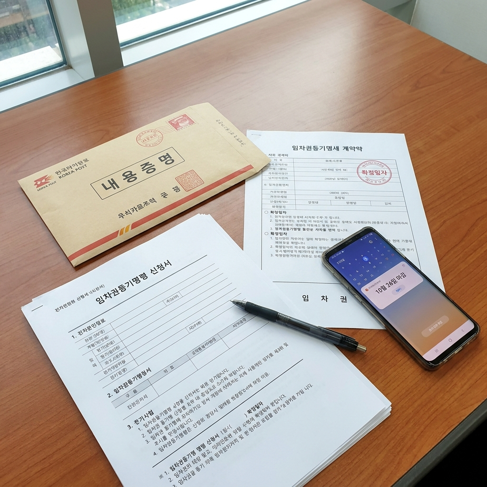

전세 보증금 안 돌려줄 때 단계별 대응 순서 — 내용증명 작성 문구 예시와 임차권등기명령 신청 서류 체크리스트
전세 계약 만기일이 다가왔음에도 임대인(집주인)이 "다음 세입자가 들어와야 돈을 돌려줄 수 있다"며 배째라 식으로 일관하거나 연락을 회피하면, 이사를 앞둔 세입자는 피가 마르는 고통을 겪게 됩니다. 이때 감정적인 싸움으로 시간을 허비하면 새 집의 잔금 일정을 맞추지 못해 계약금을 날리는 연쇄 피해가 발생할 수 있습니다.
보증금 미반환 상황에서는 법이 보장하는 정형화된 절차를 신속하고 단호하게 밟아나가는 것만이 내 피 같은 보증금을 지키는 유일한 해법입니다. 오늘 포스팅에서는 전세금 미반환 시 단계별 법적 대응 타임라인과 비용 비교표, 우체국 내용증명 실제 작성 문구 예시, 대법원 전자소송 임차권등기명령 신청 방법과 필수 서류 체크리스트까지 빈틈없이 정리해 드립니다.

전세 보증금 반환을 위해 준비하는 우체국 내용증명과 임차권등기명령 신청 서류들 / AI 제작 이미지
01 | 전세 만기일 당일 보증금을 돌려받지 못했을 때의 기본 원칙
주택임대차보호법상 임차인의 '주택 인도(퇴거 및 열쇠 반환)' 의무와 임대인의 '보증금 반환' 의무는 동시이행 관계에 있습니다. 즉, 만기일이 지났음에도 보증금을 돌려받지 못했다면 세입자는 집을 비워줄 의무가 전혀 없습니다.
가장 중요한 절대 수칙은 보증금을 전액 돌려받기 전에는 절대 주민등록(전입신고)을 다른 곳으로 옮기거나 짐을 완전히 빼서는 안 된다는 점입니다.
주민등록을 이전하거나 이사를 가버리는 순간, 기존에 확보해 두었던 **대항력(집을 비워주지 않을 권리)**과 **우선변제권(경매 시 배당받을 권리)**이 즉시 상실되어 최악의 경우 집이 경매로 넘어가도 보증금을 한 푼도 건지지 못할 수 있습니다.
02 | 집주인의 "다음 세입자 들어오면 준다"는 핑계가 법적으로 통하지 않는 이유
많은 임대인들이 관행이라는 핑계로 "새로운 세입자가 구해져야 보증금을 빼줄 수 있으니 기다려라"고 요구합니다. 하지만 이는 순전히 임대인의 개인적인 자금 사정일 뿐, 법적으로는 아무런 근거가 없는 명백한 계약 위반(채무불이행)입니다.
법적으로 만기일 익일부터 임대인은 연 5%(민법상 이율), 소송 제기 후에는 연 12%(소송촉진특례법상 이율)의 지연손해금(연체이자)을 세입자에게 배상해야 할 법적 책임이 발생합니다.
따라서 집주인의 막연한 사정을 봐주며 기다리기보다는, "법적 절차를 즉시 착수하겠다"는 단호한 신호를 보내 집주인이 대출을 받거나 다른 자금을 융통해 보증금을 우선 변제하도록 압박해야 합니다.
03 | 전세금 반환 단계별 대응 4단계 타임라인 및 소요 비용 비교표
보증금 반환 절차는 단계가 올라갈수록 법적 구속력이 강해지며, 대부분의 집주인은 2단계나 3단계에서 압박을 견디지 못하고 보증금을 마련해 돌려주게 됩니다.
| 대응 단계 |
주요 조치 내용 |
소요 기간 |
예상 비용 (셀프 전자소송 기준) |
기대 효과 및 심리적 압박 |
| 1단계: 해지 통보 |
만기 2~6개월 전 문자·카톡·통화녹음으로 갱신거절 통보 |
즉시 |
0원 |
묵시적 갱신 방지, 법적 만기일 확정 |
| 2단계: 내용증명 |
우체국 내용증명으로 반환 촉구 및 지연이자 청구 고지 |
약 2~3일 |
약 5,000원 ~ 6,000원 |
집주인 심리적 압박, 소송 시 핵심 증거 |
| 3단계: 임차권등기 |
법원에 임차권등기명령 신청 후 등기부등본 기재 |
약 2~3주 |
약 4만 ~ 5만 원 (인지대·송달료) |
이사 가도 대항력 유지, 다음 세입자 차단 |
| 4단계: 소송/경매 |
지급명령 신청 또는 보증금 반환 청구 소송, 강제집행 |
2개월~6개월 |
약 10만 ~ 30만 원 (승소 시 집주인 청구) |
판결문 확보 후 임차주택 경매 신청 및 압류 |
대법원 전자소송 사이트를 통해 임차권등기명령 신청서를 온라인으로 작성하는 모습 / AI 제작 이미지
04 | 1단계: 임대차 계약 해지 통보와 증거 확보 (문자·통화녹음·카카오톡)
계약 만기 시점에 보증금을 받기 위한 가장 첫 번째 단추는 **'만기 6개월 전부터 2개월 전까지'** 임대인에게 명확한 계약 갱신 거절(퇴거) 의사를 전달하는 것입니다.
이 기한 내에 통보하지 않으면 종전 계약과 동일한 조건으로 계약이 2년간 연장되는 **'묵시적 갱신'**이 성립되어, 세입자가 해지를 통보하더라도 효력이 발생하기까지 3개월을 추가로 기다려야 합니다.
통보할 때는 집주인에게 문자 메시지나 카카오톡을 보내고, **"네, 알겠습니다. 만기일에 보증금 반환해 드리겠습니다"**라는 식의 확인 답장을 반드시 받아 캡처해 두어야 합니다. 통화할 경우 스마트폰 통화 녹음으로 만기 퇴거 합의 사실을 남겨두어야 합니다.
05 | 2단계: 우체국 내용증명 발송법과 복사해 쓰는 실전 법적 문구 예시
만기가 임박했거나 만기 당일에도 집주인이 보증금 반환 계획을 명확히 밝히지 않는다면 즉시 우체국 내용증명을 발송해야 합니다.
내용증명 자체에 강제집행 권한은 없지만, 우체국이 공적으로 발송 사실과 내용을 증명해주므로 집주인에게 법적 소송이 임박했음을 알리는 강력한 최후통첩이 됩니다. 인터넷우체국 웹사이트를 이용하면 우체국에 직접 가지 않고도 24시간 온라인 발송이 가능합니다.
전세보증금 반환 청구 내용증명 실전 문안 (그대로 복사 사용)
[제목: 임대차계약 만료에 따른 전세보증금 반환 청구의 건]
1. 수신인(임대인): 성명, 주소, 연락처
2. 발신인(임차인): 성명, 현주소, 연락처
3. 부동산의 표시: [임대차계약서상 주소 및 동·호수 정확히 기재]
[내용]
1. 발신인은 귀하(수신인)와 위 부동산에 관하여 임대차보증금 금 [000,000,000]원, 임대차기간 [2024년 0월 0일 ~ 2026년 0월 0일]로 하는 주택임대차계약을 체결하고 거주해 왔습니다.
2. 발신인은 2026년 0월 0일 귀하에게 유선 및 문자메시지를 통해 본 임대차계약을 갱신하지 않고 만기일에 종료한다는 의사를 적법하게 통지하였으며, 귀하 역시 이를 수락하였습니다.
3. 그럼에도 불구하고 귀하는 임대차기간 만료일인 2026년 0월 0일 현재까지 정당한 사유 없이 임대차보증금을 반환하지 않고 있습니다.
4. 이에 발신인은 본 내용증명을 통하여 2026년 0월 0일까지 보증금 전액을 아래 계좌로 반환해 줄 것을 최종 촉구합니다.
- 입금 계좌: [은행명, 계좌번호, 예금주]
5. 만약 위 기한까지 보증금이 반환되지 않을 경우, 발신인은 부득이하게 **임차권등기명령 신청, 전세보증금 반환 청구 소송, 부동산 가압류 및 강제경매** 등 일체의 법적 조치를 즉각 취할 것임을 알려드립니다.
6. 아울러 이로 인하여 발생하는 연 12%의 소송촉진등에관한특례법상 지연손해금, 임차권등기 비용, 변호사 보수 및 소송비용 일체는 전적으로 귀하의 채무불이행으로 인한 것이므로 귀하에게 전액 청구(구상)할 것임을 엄중히 통고합니다.
2026년 10월 0일
발신인: [임차인 성명] (인)
06 | 3단계: 이사 가기 전 대항력 유지를 위한 '임차권등기명령' 제도
새로 분양받은 아파트 입주나 새 전셋집 잔금 지급 때문에 어쩔 수 없이 이사를 나가야 하는 상황이라면, 이사 전에 반드시 **'임차권등기명령'**을 신청해야 합니다.
임차권등기명령은 임대차가 종료되었음에도 보증금을 돌려받지 못한 임차인을 위해 법원이 법률의 힘으로 등기부등본에 임차인의 권리를 못 박아주는 제도입니다.
등기부등본 을구에 임차권등기가 기재되면, **세입자가 이사를 나가고 다른 곳으로 전입신고를 옮겨도 기존 집의 대항력과 우선변제권이 100% 그대로 유지**됩니다. 또한 등기부에 빨간 줄로 '보증금 안 돌려준 집'이라는 낙인이 찍히기 때문에 다른 세입자가 들어오지 않아 집주인이 가장 무서워하는 조치입니다.
07 | 대법원 전자소송으로 신청하는 임차권등기명령 필수 서류 체크리스트
임차권등기명령은 법무사에게 30~50만 원의 수수료를 줄 필요 없이, '대한민국 법원 전자소송(ecfs.scourt.go.kr)' 웹사이트를 통해 공인인증서만 있으면 본인이 직접 1시간 만에 신청할 수 있습니다.
임차권등기명령 전자소송 셀프 신청 5대 필수 서류
1. 주택임대차계약서 사본: 주민센터나 인터넷등기소에서 확정일자를 받은 도장이 선명하게 찍혀 있어야 합니다.
2. 주민등록등본 및 초본: 주소 변동 이력이 전부 포함되어 전입일자가 확인 가능한 서류여야 합니다.
3. 부동산 등기부등본(등기사항전부증명서): 인터넷등기소에서 발급한 말소사항 포함 공적 장부입니다.
4. 계약 해지 증빙 자료: 집주인에게 보낸 카톡/문자 캡처본, 통화 녹취록, 우체국 내용증명 도달 조회서 등입니다.
5. 부동산 도면 (일부 임차 시): 다가구주택이나 건물의 일부(예: 201호)만 임차한 경우 해당 층 평면도를 첨부합니다.
신청 시 소요되는 비용(인지대 2,000원, 송달료 및 등기신청수수료 등 약 4~5만 원)은 추후 집주인에게 법적으로 전액 청구하여 돌려받을 수 있습니다.
08 | 임차권등기명령 결정문 송달 후 등기부등본 확인과 이사 타이밍
임차권등기명령에서 가장 흔하게 발생하는 치명적인 실수는 **"법원에 신청서 제출했으니 이제 이사 가도 되겠지"** 하고 짐을 빼버리는 것입니다.
신청서를 냈다고 해서 효력이 발생하는 것이 아닙니다. 법원의 심리를 거쳐 결정문이 나오고, **그 결정문이 등기소로 넘어가 실제 등기부등본 '을구'에 임차권등기가 올라간 것을 두 눈으로 확인한 후에 이사를 나가야 합니다.**
과거에는 집주인이 결정문을 송달받아야 등기가 가능했으나, 주택임대차보호법 개정으로 이제는 집주인에게 송달되기 전이라도 법원 결정 즉시 등기가 완료됩니다. 통상 신청일로부터 등기 완료까지 약 2주에서 3주가 소요되므로, 반드시 등기부등본을 재열람하여 확인 도장을 찍은 뒤 짐을 빼시기 바랍니다.
09 | 전세보증보험(HUG·HF·SGI) 가입자의 보증사고 이행청구 접수 요령
HUG(주택도시보증공사), HF(한국주택금융공사), SGI서울보증의 전세보증금반환보증에 가입되어 있다면 절차는 훨씬 간단하고 안전합니다.
전세 만기일 다음 날부터 1개월이 경과할 때까지 보증금을 돌려받지 못하면 '보증사고'가 공식 성립합니다.
임차권등기명령이 등기부에 등재된 직후, 보증기관 지사에 방문하거나 모바일 앱으로 '보증채무 이행청구'를 접수하면 보증기관에서 심사를 거쳐 **약 2주~3주 이내에 세입자 계좌로 보증금 전액을 대신 입금(대위변제)**해 줍니다. 이후 집주인에 대한 구상권 청구와 경매 처리는 보증기관이 전담하게 됩니다.
10 | 임차권등기 후에도 안 줄 때: 지급명령 신청 vs 전세금 반환 청구 소송
보증보험에 가입되어 있지 않고 임차권등기 후에도 집주인이 돈을 돌려주지 않는다면, 집주인의 재산을 강제집행하기 위한 집행권원을 확보해야 합니다.
집주인이 보증금 액수나 사실관계를 다투지 않고 단순히 돈이 없어서 못 주는 상태라면 **'지급명령 신청'**이 소송보다 인지대가 1/10로 저렴하고 1개월 만에 신속하게 확정 판결과 동일한 효력을 얻을 수 있습니다.
반면 집주인이 원상복구 비용이나 하자 분쟁을 트집 잡으며 이의신청을 할 가능성이 높다면, 곧바로 정식 **'전세보증금 반환 청구 소송'**을 제기해야 합니다. 승소 판결문을 받으면 해당 주택뿐만 아니라 집주인의 예금 계좌, 급여, 다른 부동산을 일괄 압류하고 강제경매에 부쳐 보증금과 지연손해금을 완벽하게 회수할 수 있습니다.
📌 함께 읽으면 좋은 가을 나들이 & 생활 팁
#전세보증금반환
#보증금안돌려줄때
#내용증명작성방법
#내용증명문구예시
#임차권등기명령신청
#전자소송임차권등기
#HUG보증이행청구
#전세금반환소송
#임대차계약해지통보
#대항력우선변제권